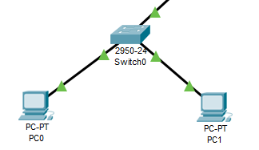
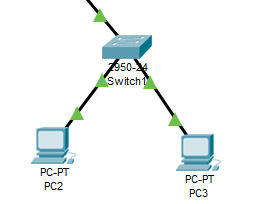
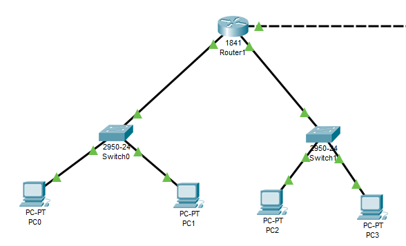
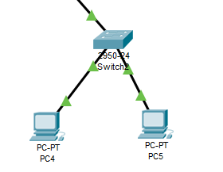
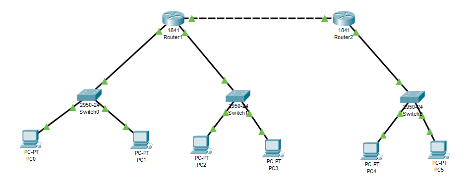
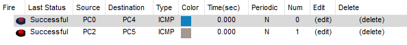

Лабораторная работа №1 "Экосистема разработки программ с открытым кодом":
Создание персональной страницы-отчета на github и работа с git.
- Создать личный профиль.
- Присоединиться к репозиторию "Интернет-технологии".
- Создать собственный репозиторий.
- Создать личную страницу-отчет по лабораторным работам.
Лабораторная работа №2 "Разработка простого веб-приложения":
Проектирование и разработка индивидуального или коллективного веб-приложения с использованием html, css, js + json, xml.
- Собрать команду для разработки веб-приложения (SPA) и распределить роли.
- Сделать разметку страницы по макету. Макет страницы. Исходный код на index.html.
- Прописать стили страницы. Исходный код на css.
- Прописать js функционал и реализовать возможность чтения json. Исходный код на js и json.
Лабораторная работа №3 "Настройка локальной сети передачи данных":
Настройка коммутаторов и маршрутизаторов.
Для выполнения лабораторной работы нам понадобится программа "Cisco Packet Tracer".
Вариант №12
Количество узлов в сети LAN A - 400
Количество узлов в сети LAN B - 900
Количество узлов в сети LAN C - 3000
- Размещенная и настроенная подсеть A 
- Размещенная и настроенная подсеть B 
- Соединенные через роутер подсети A и B 
- Размещенная и настроенная подсеть C 
- Соединенные через роутеры подсети A,B и C 
- Результаты отправки сообщений из подсети A (PC2) и B (PC3) в подсеть C (PC5) 
Подготовка к экзамену:
Подготовка мини-конспекта ответа на один из экзаменационных билетов (коллективная работа).